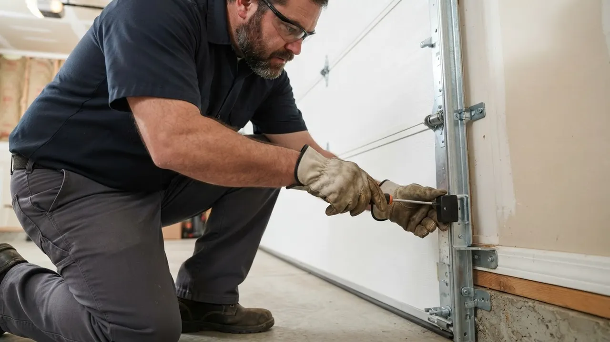

Your local team · Browntown
Garage Door Repair in Browntown Done Right the First Time
When your garage door quits, you need Garage Door Repair in Browntown that shows up fast and fixes it right. We work the tight alley garages, older row homes, and commercial loading bays around Lancaster Avenue and Broom Street every week. Broken springs, snapped cables, dead openers, doors off track: we carry the parts and the tools to handle it in one visit. Call (302) 556-5080 and we'll get you moving again.
Local knowledge
Garage Door Repair in Browntown You Can Count On
Garage Door Repair in Browntown is not a side job for us. Delaware Express Garage Door Service has worked the dense blocks between Lancaster Avenue and Broom Street since 2010, and we know what these older homes and alley garages do when the weather turns. Browntown Garage Door Repair calls come in all year, but spring failures spike every March when temperatures swing 40 degrees in a week. We keep torsion springs, galvanized steel cables, and LiftMaster and Chamberlain openers on the truck so most jobs finish the same day. Whether you're in Browntown North near the park or down on Lincoln Street, we treat every call like it's two blocks from our shop, because most of them are.

Services available in Browntown
Garage Door Services Available in Browntown
Every service we offer is built for the way Browntown actually works. Tight alleys, older doors, and heavy daily use mean repairs need to be done right the first time, because nobody wants a second trip. If you've been searching for Garage Door Repair in Browntown near me and want a crew that already knows the neighborhood, this is the list of what we handle. From a single broken torsion spring to a full commercial door replacement, we cover it.
01
Garage Door Repair
General repair is our bread and butter in Browntown. We fix doors that won't close, won't open, or hang crooked in the track. Most calls here involve worn rollers, bent track brackets, or a door that jumped the track after a hard slam. We diagnose on arrival, quote before we start, and finish most repairs in a single visit.
View service 02Garage Door Installation
New door installation in Browntown means working around older framing and tight alley clearances. We measure twice, check the header, and set the track so the door clears the alley wall. We install Clopay, Amarr, and Wayne Dalton doors sized for row home and small commercial openings. Most installs wrap up in one day.
View service 03Garage Door Opener Repair
Opener problems in Browntown often trace back to stripped gears, dead logic boards, or remotes that lost their code. We repair LiftMaster, Chamberlain, Genie, and Craftsman units on site. If the motor is fine but the door won't respond, we test the safety sensors and the wall console before recommending anything new.
View service 04Garage Door Opener Installation
We install belt-drive and chain-drive openers built for the door weight and ceiling height in your Browntown garage. Many alley garages here have low ceilings and no outlet near the motor, so we run the wiring clean and mount the rail to clear the door travel. LiftMaster and Chamberlain are our most-installed brands here.
View service 05Garage Door Spring Repair
Torsion spring failure is the number one call we get in Browntown. These springs are rated for a set number of cycles, and older doors here are well past that. We replace torsion and extension springs with matched pairs, use proper winding bars, and never leave a door on one new spring and one old one. Same-day in most cases.
View service 06Garage Door Cable Repair
Snapped cables usually happen on one side first, which throws the door off balance and can send it crooked in the track. In Browntown's older garages, cables fray against worn cable drums and sharp track edges. We replace both cables as a set, inspect the drums, and re-tension the springs so the door lifts evenly.
View serviceBuilt around the city
How We Handle Garage Door Repair in Browntown
Working in Browntown means planning for tight access before we ever leave the shop. Most garages here open onto alleys off Lancaster Avenue, Lincoln Street, and Broom Street, so we park on the street and carry tools in by hand. We bring a power drill, socket wrench set, winding bars, C-clamps, tape measure, level, screwdriver set, rubber mallet, vise grips, and safety glasses on every call. If you need 24/7 garage door repair Browntown DE residents can actually reach, our phone is answered around the clock. We follow UL 325 for safety reverse and ANSI/DASMA 102 for installation, and we keep our Delaware contractor license current. Most standard repairs take one to two hours on site.
Most Browntown garages open onto narrow alleys, so we can't pull a truck up to the door. That means carrying tools, springs, and door panels by hand, which adds time to the job. We scope the access before we schedule. If the alley is too tight for a full panel, we bring a two-piece door or plan a street-side staging point. We've done this on enough Browntown blocks that we know which alleys allow what.
Many Browntown homes still have their original hinges, brackets, and torsion tubes. That hardware is often worn past spec and doesn't match modern replacement parts off the shelf. We carry older bracket styles and can match most legacy hardware. When a part is truly obsolete, we tell you what needs to change and why, then quote the upgrade before we touch anything.
Browntown's housing stock is old, and the torsion springs on these doors are often well past their rated cycle count. That's why spring calls spike here compared to newer neighborhoods. We replace springs in matched pairs with the correct wire gauge and inside diameter for your door weight. We also check the drums, cables, and bearings while we're in there, because a new spring on worn drums won't last.
Every opener we install or repair has to meet UL 325 for entrapment protection. That means working safety sensors and a reverse test before we leave. If your current opener fails this test, we fix it or flag it.
This standard covers garage door installation and performance. We follow it on every install and major repair in Browntown, which matters on older homes where the original framing may not meet current spec.
Opener wiring and commercial door operators have to meet NEC. In Browntown's older garages, we often find ungrounded outlets or undersized wiring. We correct what we can and tell you what an electrician needs to handle.
Common local problems
Common Garage Door Problems in Browntown
Broken torsion springs on aging doors
Doors off track from alley impacts
Opener motor failure and stripped gears
Cable snaps and worn drums
Warning signs
Signs You Need Garage Door Repair in Browntown
A door that lifts higher on one side usually means a cable is frayed, a spring is losing tension, or the track is bent. In Browntown's older garages, this often points to worn cable drums. If you keep running it, you risk the door jumping the track entirely.
That bang is usually a torsion spring snapping. It's one of the most common calls we get in Browntown, especially in winter. The door will feel extremely heavy or won't open at all. Don't force it. Call us and we'll replace the spring pair.
If you hear the motor but the door stays put, the issue is usually a stripped gear, a broken chain or belt, or a disconnected trolley. This is common on older openers in Browntown. We diagnose it on site and repair the specific failure rather than pushing a new opener.
A door that reverses for no reason usually has misaligned safety sensors or a failing logic board. This is a safety issue, not just an inconvenience. We realign the sensors, check the wiring, and confirm the door meets UL 325 before we leave.
Noisy doors mean dry or worn rollers, hinges, or bearings. In Browntown, where alley dust and grit get into the track, this happens faster than in newer neighborhoods. A tune-up with new rollers and lubrication usually solves it before bigger parts fail.
Pricing and expectations
Garage Door Repair Pricing in Browntown
Typical 2026 pricing for Garage Door Repair in Browntown runs $150 to $450 for most common repairs. A standard torsion spring replacement usually lands between $250 and $400, depending on door weight and spring size. Roller and hinge jobs are often under $200. Opener repairs range from $120 to $300, and a new opener install runs $350 to $700. We quote before we start, and we don't add trip charges inside Browntown. If you've been looking for affordable garage door repair Browntown DE homeowners can actually budget for, we keep our pricing straightforward.
Heavier doors need larger springs and higher-horsepower openers, which raises parts cost. A standard single-car door is cheaper to repair than a double-car or custom door. We measure and quote based on your actual door, not a flat rate.
Common springs, cables, and rollers are on our truck, so those jobs stay in the standard range. If your door uses an obsolete panel or a discontinued opener part, we may need to order it, which adds a day and sometimes cost. We tell you upfront.
A tight alley garage with limited parking takes longer than a driveway job. If we have to carry tools a long distance or work around a car, that adds labor time. We factor that in before we quote, not after.
We know the route
Navigating Browntown: Landmarks We Use
Browntown is compact, but the one-way streets and alley network can slow anyone down who doesn't know the area. We use a few well-known landmarks to orient our routes and give customers clear arrival windows. If you're giving us directions, referencing one of these spots helps us find you faster.
Lancaster Avenue
Lancaster Avenue is the main spine through Browntown and the easiest way for us to approach from the north or south. We use it as our primary route and branch off onto side streets from there.
Browntown Park
Browntown Park is a useful reference point for the north side of the neighborhood. If your garage is near the park, we know which cross streets to take and where parking is easiest.
Union Street
Union Street cuts through the middle of Browntown and connects several residential blocks. We use it to move between jobs quickly when we're working multiple calls in the area.
Wilmington Hospital
Wilmington Hospital sits just outside Browntown and serves as a clear orientation point for the eastern edge of the neighborhood. It helps us route around hospital traffic when we're heading to nearby streets.
St. Francis Hospital
St. Francis Hospital is another anchor we use for the southern approach into Browntown. If you're near it, we know which streets to take to avoid the busiest intersections.
Lancaster Avenue commercial corridor
Lancaster Avenue runs through Browntown with a mix of small retail, service businesses, and light industrial spaces. Several of these buildings have rolling steel or sectional doors that need regular service.
Browntown service coverage
Browntown Neighborhoods We Serve
We cover every block of Browntown, from the north side near the park down to the commercial stretches along Lancaster Avenue. If you're on a street with an alley garage, we've probably worked on your block already. Here's a look at the areas we serve most and what's distinctive about each one.
Browntown NorthBrowntown SouthLancaster AvenueLincoln Street and Broom Street
Delaware Express Garage Door Service3601 Old Capitol Trl A5, Wilmington, DE 19808, United States, Wilmington, Delaware
Local results
Recent Garage Door Repair Jobs in Browntown
A homeowner on Lincoln Street called after their torsion spring snapped at 7 a.m., leaving the car trapped inside.
We arrived by 9 a.m. with a matched pair of torsion springs sized for the door weight. We removed the old springs, installed the new pair, re-tensioned the cables, and tested the full travel. We also lubricated the rollers and hinges while we were in there. The door was working by 10:30 a.m. Total cost was under $350, and the homeowner was back on the road before lunch.
A commercial tenant on Lancaster Avenue had a rolling steel door that wouldn't close, leaving their inventory exposed overnight.
We responded the same evening, diagnosed a broken chain and a bent track section. We replaced the chain, straightened the track, and reset the operator limits. We also checked the safety sensors and confirmed the door met UL 325. The door was secure by 9 p.m. The tenant avoided a potential theft loss and didn't miss a day of business.
A rental property on Broom Street had a door that was off track and wouldn't close, and the tenant couldn't reach the landlord.
We secured the door on arrival, replaced two bent track brackets and a set of worn nylon rollers, and reset the door in the track. We also replaced the bottom seal, which was torn and letting water in. The door closed and locked properly within two hours. The landlord approved the repair by phone, and the tenant had a secure garage that night.
Notes from local customers
What Browntown Customers Say
Our garage door spring broke on a Saturday morning and we couldn't get the car out. Delaware Express had a tech here by 10 a.m. He replaced both springs, checked the cables, and had us running in about an hour. Fair price, no upsell. We've used them twice since for our rental property.
I manage a small warehouse on Lancaster Avenue and our rolling door quit on a Friday afternoon. They came out same day, fixed the chain and track, and had us back in business before close. They know commercial doors and they don't waste time. I keep their number on the wall now.
Our door was off track and wouldn't close all the way. The tech was polite, explained what happened, and fixed it in about two hours. He also showed me how to test the safety sensor so I could check it myself. Good service, showed up when they said they would.
Plan for the season
How Seasons Affect Garage Door Repair in Browntown
Book a tune-up in early spring before the rush. We'll check spring tension, lubricate moving parts, and catch worn cables before they snap.
Lubricate your rollers and hinges in early summer. If your door sounds louder than usual, call us before the opener motor burns out from the strain.
Clear leaves and debris from your tracks weekly. If your bottom seal is cracked or missing, replace it before winter. It's a cheap fix that keeps cold air and pests out.
Don't force a frozen door. If it won't open, call us. We can usually free it and replace any damaged parts the same day. Keep your tracks clear of ice and salt.
Nearby service areas
Nearby Cities We Serve from Browntown
Browntown sits in the middle of our Wilmington service area, which means we can reach most nearby neighborhoods quickly. If you're just outside Browntown, we probably cover your block too. Here's how the surrounding areas connect to our route.
Before you hire
What to Ask Before Hiring a Garage Door Repair in Browntown
Do you carry common springs and cables on your truck?
Are you licensed and insured in Delaware?
Do you charge a trip fee or diagnostic fee?
Will you replace both springs or just the broken one?
Do you warranty your work?
Trust and compliance
Licensed, Insured, and Local
Delaware contractor license
DASMA certification
Door and Access Systems Manufacturers Association
IDEA certification
Institute of Door Dealer Education and Accreditation
New Castle County Chamber of Commerce
Member
Better Business Bureau
Accredited Business
Most repairs in Browntown run $150 to $450 in 2026. A torsion spring replacement is typically $250 to $400. Roller and hinge jobs are often under $200. Opener repairs range from $120 to $300. We quote before we start and don't charge trip fees inside the neighborhood.
We can't speak for other companies, but we've been working Browntown since 2010 and most of our calls here come from repeat customers and referrals. We're licensed, insured, and we carry common parts on the truck so most jobs finish same day. Call (302) 556-5080 and judge for yourself.
Yes. We answer the phone around the clock for emergency garage door repair in Browntown. If your door won't close and your garage is exposed to the alley, call us. We prioritize doors that are stuck open or won't secure, and we aim to be on site fast.
Most calls before early afternoon get handled the same day. We keep torsion springs, cables, rollers, and common opener parts on the truck, so we're not making a parts run. If we can't finish same day, we tell you upfront and schedule the return before we leave.
Yes. We repair and install rolling steel and sectional doors for businesses along Lancaster Avenue and Union Street. We work around your operating hours and prioritize doors that block deliveries or secure inventory. Commercial calls get same-day attention whenever possible.
Your next step is waiting
Get Garage Door Repair in Browntown Today
If your door won't open, won't close, or just doesn't sound right, call Delaware Express Garage Door Service. We've been working Browntown since 2010, we carry common parts on the truck, and we quote before we start. No trip fees inside the neighborhood. Same-day and 24/7 emergency service available. Call (302) 556-5080 and we'll get your door working again.
Start with the basics
Call For Garage Door Service
Call (302) 556-5080 and tell us what your door is doing. We answer during business hours and run emergency calls after hours. Most days we can get a tech to you the same day, and we will give you a window, not a maybe.